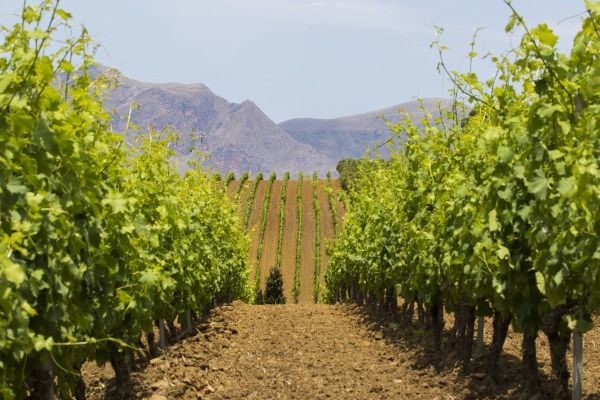
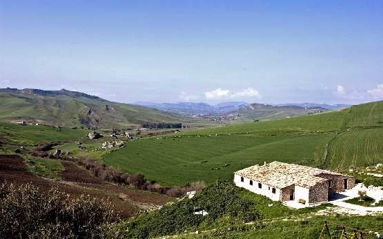
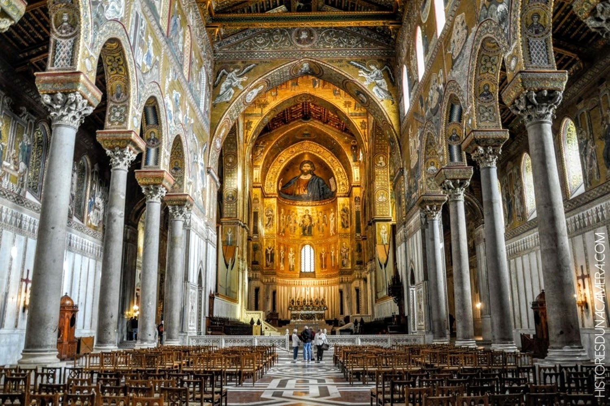
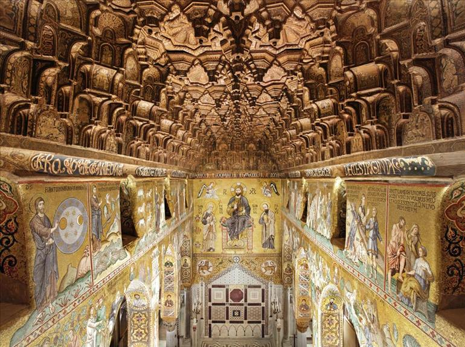
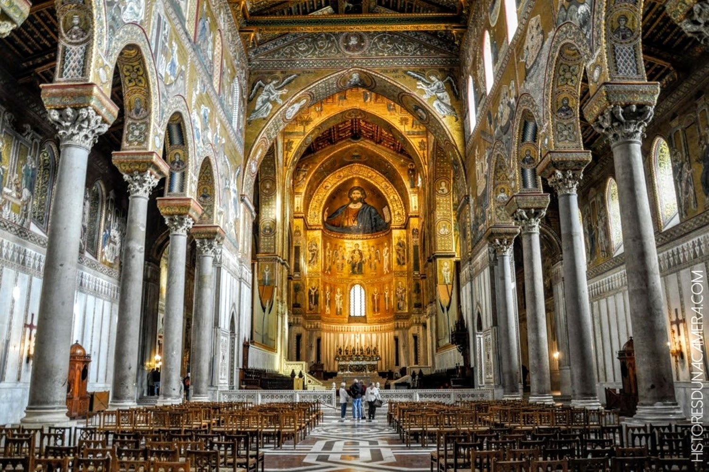
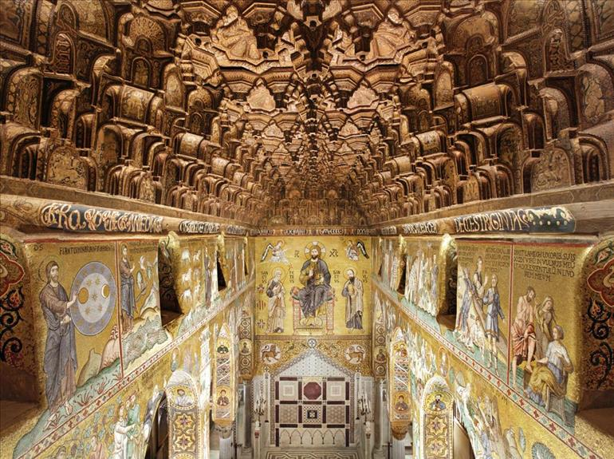
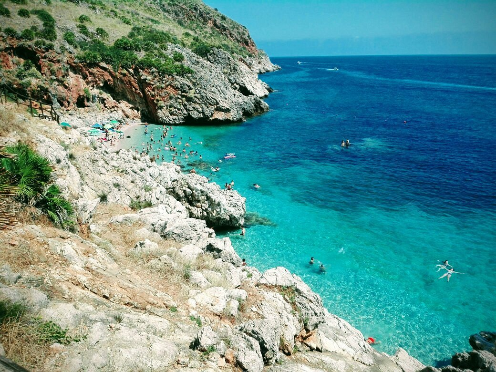

In questo articolo si vuole attirare l'attenzione, oltre che su alcune problematiche, sulla bellezza del patrimonio artistico e paesaggistico delle terre che abbiamo visitato e che, purtroppo, a causa del problema mafioso rischia di essere svalutata e rovinata.
La mia riflessione parte dall'esperienza che ho vissuto nell'Alto Belice Corleonense: una bellissima zona di campagna della Sicilia popolata da colli, prati e vigneti; zona d'origine di tantissimi prodotti agro-alimentari che rappresentano un'eccellenza per la Sicilia e per il nostro paese.


la valorizzazione del territorio è importante per diversi aspetti. in primo luogo è importante far arrivare alle persone una buona immagine del territorio e della regione. è importante per la promozione delle bellezze naturali legate al settore terziario che, oggi, è un aspetto fondamentale per l'economia di una regione.
la promozione del sistema terziario diventa fondamentale soprattutto se, come nel caso della Sicilia, si parla di un'isola che si trova in un bellissimo mare, in cui si può assaporare buonissimo cibo ed è ricca di tradizione e cultura da sfoggiare .
Oltre all'immagine, ovviamente, dal paesaggio e dalla promozione dei territori, deriva un tornaconto economico non indifferente.
Grazie alla nostra permanenza in Sicilia, abbiamo potuto ammirare grandi bellezze naturali, sia nelle zone costiere, sia nell'entroterra, e assaporare i buonissimi prodotti tipici e tradizionali della regione. purtroppo, abbiamo anche notato che questi capolavori paesaggistici, culinari, e non solo, sono sconosciuti al grande pubblico a causa delle limitazioni causate dalla complessa situazione sociale in cui è costretta la Sicilia.
Questa situazione deriva principalmente dalla mafia che intacca il sistema economico e sociale sottraendo importanti fondi e risorse al turismo e alla promozione delle bellezze del territorio. oltre a ciò, la mafia estende il suo controllo anche sulle infrastrutture e sugli appalti creando grandi difficoltà organizzative e non solo.
Ad esempio, abbiamo visto che le strade che portano ai bellissimi colli dell'Alto Belice Corleonese sono quasi tutte dissestate, sterrate. invece, per la bellezza della zona, dovrebbero essere perfettamente agibili e praticabili, in modo da consentire ai turisti di vivere al meglio tutte le esperienze che questa terra può offrire.
Lo stesso discorso può essere fatto per le città, infatti, spesso, le città di quella zona non sono state edificate seguendo un piano urbano funzionale, soprattutto le periferie e i paesi limitrofi. ciò rende difficoltoso il loro mantenimento e intacca la loro funzionalità.
di conseguenza, anche la loro gestione e il mantenimento dell'ordine e della sicurezza risultano più complicati.
Un esempio positivo che ho potuto osservare a Palermo è stato il duomo. l'attrazione, oltre a essere una fantastica opera d'arte e cultura, era molto curata e la città attorno ad essa sembrava risentire in modo positivo della sua presenza. infatti, era molto ordinata, pulita e rendeva onore perfettamente al capolavoro che ospitava.
Partendo da questo piccolo gramde esempio positivo, si dovrebbero trattare con la stressa cura e dedizione tutte le altre bellezze che la Sicilia può offrire.

Il duomo di Monreale, altresì noto come cattedrale di Santa Maria Nuova, è il principale luogo di culto cattolico di Monreale, nella città metropolitana di Palermo. Costruita a partire dal 1172 per volere di Guglielmo II d'Altavilla, re di Sicilia dal 1166 al 1189, è famosa per i ricchi mosaici bizantini che ne decorano l'interno. Nell'agosto del 1926 papa Pio XI l'ha elevata alla dignità di basilica minore. Dal 3 luglio 2015 fa parte del Patrimonio dell'umanità (UNESCO).
 



a riserva naturale orientata dello Zingaro è un'area naturale protetta situata a ovest del golfo di Castellammare nei comuni di Castellammare del Golfo e San Vito Lo Capo, in provincia di Trapani.
